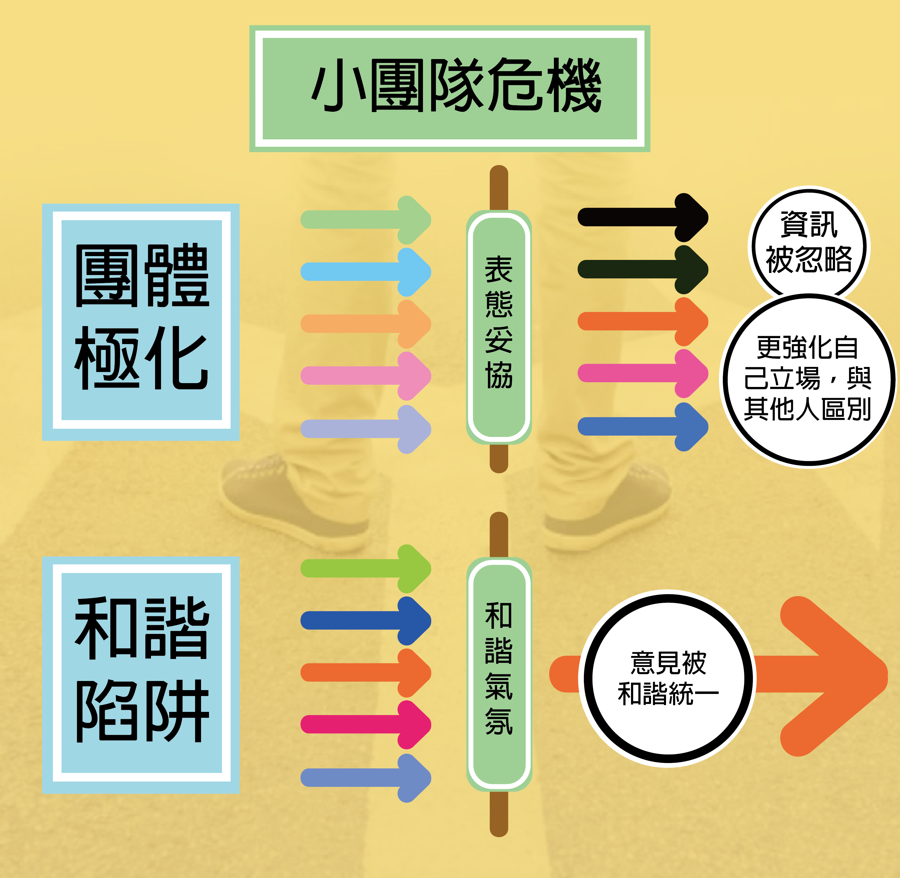

梭羅曾感嘆，大眾永遠達不到其中最優秀成員的水準，反而會退化到最低成員的水準。 在我們一般的想像中，群體很容易讓人變笨，或是集體決策必定要走向極端，比如說像是納粹在德國掀起來的集體軍國狂熱，就是很典型的社會集體決策讓整個國家陷入整個瘋狂。
但這本書告訴我們，其實在適當的情境下，群體不需要靠著超級聰明的個人來掌握，就能展現出遠超越一般專家的智慧，甚至群體可以比最聰明的那個人還要聰明。而在這裡指的「決策」，指的是問題中蘊含著很多複雜變數，並且針對這樣複雜問題所需要做出的決策，比如像是預測艦艇消失的位置、預測一頭牛的重量或是設定公司未來的目標，而這個時候群眾的力量就可以發揮作用。
值得注意的是，大部分這類預測中，成員之間都是各自評估然後再將答案集中平均，雖然群體猜測值不會每次都優於所有個體成員的數值，但卻能穩定的得到足夠好的答案。這個理論從統計學角度來看也很合理，在一個組成多樣且人數又多的群體內，每個人的獨立估值在統計後會形成一個常態分佈，在誤差相互抵消後，便能顯現出預測的理想值。
如果要讓群體能做出聰明的決策，該群體就必須具備四大特質：意見多元化、思考獨立性、決策獨立性、統合系統。
1.意見多元化：成員都有私人資訊，即便是對事實的不同詮釋
在這邊先來突破以往的印象，研究發現，多元組成的一般團隊的表現通常還會比一個由聰明人或是專家組成的團隊表現得更好。在團隊成功時，我們習慣將成就歸功於群眾當中少數幾位聰明人而非歸功於群眾，但其實我們總是高估專家的價值。
因為在範圍極廣的領域要預測不確定的未來，單一專業很難解決這類的複雜問題，專家反而會被自己的專業範圍侷限住。所以當我們想穩定的產生出優秀的決策，就必須要刻意地保持團隊裡面的多樣性，而不是依賴單一人士的意見。
2.思考獨立性：在群體中的成員能夠獨立思考
一般來說，群體通常需要透過交流才能維持團隊裡的凝聚力。但矛盾的是，若溝通太過頻繁，群體思想上的誤差會被同化而且被放大，產出的決策就會更加偏向極端。如果要讓一個群體變得聰明，最好的辦法是群體中每個人盡可能地獨立思考和行動。
雖然這樣每個人的資訊都不夠完整，但能夠讓成員更注意私人資訊，最終個別學生很可能會答錯，但是整個團隊卻更有機會做出正確的集體答案。
3.決策獨立性：在群體中的成員能夠透過思考來自主判斷
隨著團隊內的多元性跟成員的獨立性建立起來後，接下來就是讓每個人能夠透過自己有價值的資訊，做出獨立判斷。而書裡也指出大公司的決策如何在官僚系統中會產生的巨大問題，因為與執行單位的距離過遠，決策單位缺乏足夠的有效資訊，最後做出的決策反而會距離事實非常遙遠。
公司真正該做的是由上層提供下屬重要的決策資訊，再藉由蒐集集體智慧的方法，決策單位對未來才能進行合理的預測。
4.統合系統：存在一個機制將私人意見轉換成集體決策
在當今世界裡，似乎沒有任何系統擅長事先選出贏家，所以通常在一個具有多元和獨立成員的系統裡，在做決策時，不會要求所有成員聽從某位贏家的聲音，相反地，他會想出如何利用某些機制，像是市場價格或是投票系統，讓每個人先做出多樣性的選擇後，經由整合集體判斷來找出最佳選擇。
以蜂群採蜜為例，蜂巢採蜜時便先派出一群蜜蜂隨機探路，當某隻探路蜜蜂發現了一片豐盛的花蜜來源，他會先飛回蜂巢跳搖擺舞，由跳舞的強度其他蜜蜂便可得知花蜜品質，進而吸引群體來。蜂群不是全體討論完所有可能的選擇後，再決定出一個最理想的覓食路線，而是透過隨機分散的方式來尋找。藉由先發散，在快速收斂，這樣可以最快速的找到最佳解答。
小團隊危機
講述完大群體決策的好處，這邊要來講述小團隊的決策可能會造成的危機。小團隊中因為成員間彼此的影響更直接也更即時，所以決策的判斷起伏也較大、較極端，比起大市場可以統計出理想值，小團隊反而更容易削減總體的價值。
但為什麼團隊在決策的時候，通常會陷入極端呢？首先在形成共識的過程中，原本不確定的人也會慢慢朝多數人的方向，而本來就較為明確的就會更發表更強烈的論調來支持自己的立場，最後整體會往一個特定的方向橫移過去。
再來就是當新資訊進來時，很容易就會被重新詮釋成舊有資訊而忽略新資訊的價值，導致對於決策會造成明顯的失誤。所以這時候團隊內部的多樣性和獨立性的重要性就出現了，多樣性不只能增進團體中不同意見，也可以讓團隊更加注重獨立資訊分析。
此外，小團體面臨的一個更大的決策危機在於「強調和諧勝過異議」。在團隊思考裡「和諧」是非常危險的，首先因為和諧的團體比起多樣性的團體更容易凝聚在一起，導致對於團體的決策偏向更加堅定不移；
再來是這種和諧並不是因為沒有異議而產生，而是靠著讓成員相信大家想法都一致，而產生這樣奇異的虛構氛圍，即便有人想提出異議，和諧的氛圍也會讓他遭受到一股非常明顯的從眾壓力，所以特意強調團隊內「和諧」的思考討論，不但不能敞開，反而會關閉成員各自的想法。